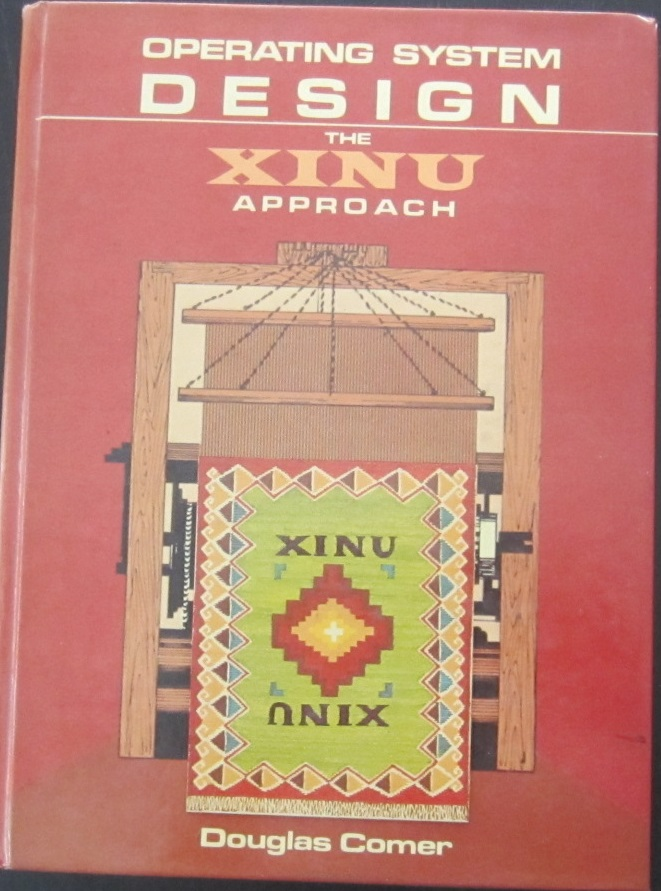

Back in the day I ported xinu to and i960CA processor. This is a posting I made to comp.os.xinu describing the port. If you have access to Google Groups, the original post is here: xinu port to i960.
The Post
Note***
The following message is for ch...@gestetner.oz.au (Mario Mendes) but
in general I would be interested in discussing this with anyone.
I attempted to mail this to chris around December 1990.
#Chris,
#
#Some time ago we communicated about porting Xinu to the 960CA. I believe
#at the time we had not yet firmly decided to go with Xinu. Well, we
#finally made the decision to go with Xinu and I have successfully ported
#it.
#
#The target environment is the EV80960CA evaluation board from Intel.
#We used the Gnu development tools. All of the code we have developed so
#far has been from release 1.1 of the Gnu tools. We are currently in
#the process of upgrading to release 1.2. I have discovered an
#alignment bug in gcc 1.2, so that has delayed our conversion.
#
#Anyway, the Xinu port was a little more difficult than I had imagined.
#I had previously done a Xinu port to a 68000 based single board computer,
#and it went really fast.
#
#It took longer than usual because the 960 is so damned "weird". The stack
#grows the wrong way, procedure calls are certainly different, and I had some
#problems getting time-slicing to work.
#
#Currently we have Xinu configured for only a single tty device, and of
#course we use the Real Time Clock. We have it interrupting at 200 times
#per second, but only process every other one for an effective clock rate
#of 100 HZ. We have the shell process working just fine. I have run all
#of the test routines under the TEST directory that I possibly could (no
#networking or disk-related stuff) and it all runs just fine.
#
#I ported from release 7.1 of the Xinu Sun source.
#
#Off the top of my head I'll list some of the modifications I made to Xinu:
#
# 1. getstk() was modified quite a bit. The idea is to return the starting
# address of the block instead of the ending address. Just had
# a thought while writing this: I wonder if we even need getstk??
# Maybe getmem() can completely replace getstk().
#
# 2. create() had to be modified. Most of the mods concerned how the
# stack needed to be manipulated so the process would start up and
# terminate correctly.
#
# 3. resched() was modified so that NO context switches are allowed
# during an interrupt.
#
# 4. I added a routine that ISR's may optionally call that will cause
# resched() to run after the ISR has completed and returned.
#
# 5. The addarg() routine in the shell needed to be re-written. I added
# a buffer to the Shl array for the parameters to go. I'm still not
# sure this is the way to go, but it was a quick fix and it worked.
#
# 6. I added timeout(), and untimeout() calls to the kernel. The syntax
# is like that as described by AT&T's Driver Design Manual.
#
# 7. I modifed the sleep routines and added a routine called sleep100 to
# accurately reflect our use of the RTC.
#
#Well, those are the major items. There's lots of little detail changes too.
#
#I'm hoping you have some questions for me or something that could get
#a dialog between us going. I would like to know if you modified resched()
#like we did, and if not, how you resolved the time-slicing problem. That
#is probably the single biggest issue that I had. I'm satisfied with our
#solution, but I'd like to know how someone else resolved the problem.
#
#I would like to apologize for not communicating with you earlier. I wanted
#to keep you as my "Ace in the hole", and contact you if I was really stuck
#on something. I prefer to sweat the details alone because it forces you
#to learn the system more thoroughly.
#
#Hope to hear from you soon, and hope you are enjoying the Aussie summer!
#A co-worker here at Systech who just happens to sit right next to me
#is an Australian citizen and is currently visiting his parents in
#Melbourne. He hadn't been back for about 10 years, so he was really looking
#forward to the trip. Christmas in the summer sounds a little strange to
#me, but then I think of that bike I got when I was about 7 years old that
#had to stay in the garage for several months until the weather warmed up.
#Geez, in Australia I could have had a blast on Christmas day!
#
#
#John Reed
#Sr. Software Nerd
#
#Systech Corp.
#San Diego, CA
#
#{ucsd,uunet}!systech!johnr
#johnr%systech.uucp@ucsd
#
#FAX: 619-453-0238
Since December, we've made significantly more progress. We designed our
own 960 VME board and have ported quite a unique appication on top
of Xinu. Our board has a 960CA at 33Mhz, 2 Megs of Ram, and an
Intel 82596 ethernet controller. This board is a real screamer!
And it runs Xinu! Pretty neat. ;-)
Our application translates incoming telnet packets to Systech's I/O
control blocks (IOCB's for short). Outgoing IOCB's are of course
translated to telnet packets and sent out on the host.
Of course this then requires a driver in the host system that understands
these IOCB's. The driver presents a standard tty interface to the
host system.
The IOCB interface is very efficient and lumps data together in a
"multi-channel" packet, which cuts down considerably interrupts to
the host.
We're able to pump almost 300,000 chars/sec through the board right
now. That's a lot of telnet sessions! Pretty hot I'd say!
Host loading is SUBSTANTIALLY less when the telnet sessions are routed
through our board, as opposed to the standard host ethernet controller.
Anyway, testing continues and I think this number will increase, since
this was the first measurement we have made.
I must conclude by saying that we're hooked on Xinu. ;->
Thanks Doug!
--
--------------------------------------------------------------
John Reed {uunet,ucsd}!systech!johnr
Systech johnr%systech.uucp@ucsd
--------------------------------------------------------------